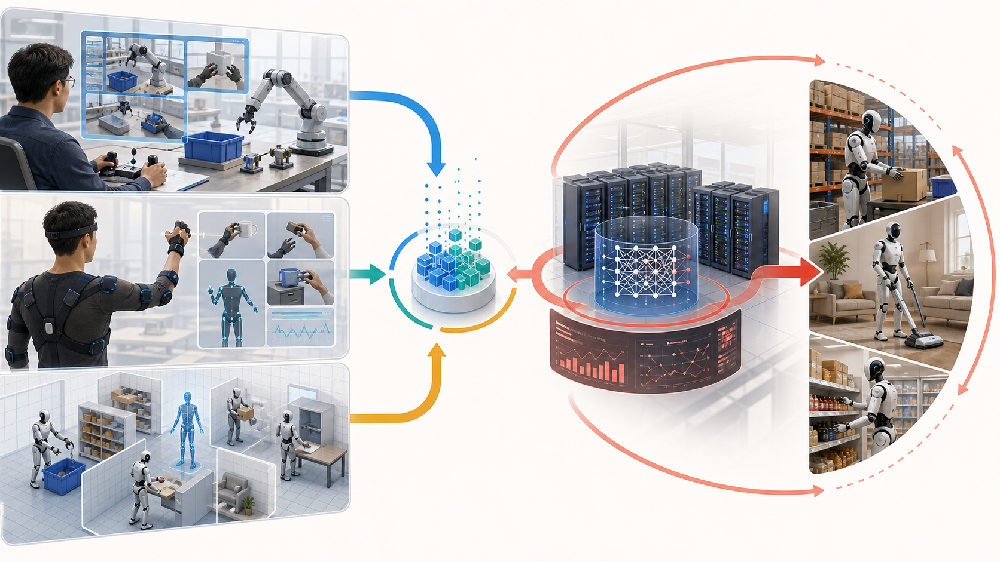

行业基础科普 · 端到端模型 · 数据飞轮
机器人从“会动”到“会学”的十年
端到端模型不是魔法按钮，而是一套把真实任务数据、遥操作、仿真、视觉语言模型和安全控制连接起来的工程系统。中国公司的优势在数据场景和硬件迭代，海外公司正在把基础模型和仿真平台推向产品化。

一张流程图读懂端到端模型
传统机器人靠工程师写规则。端到端路线希望模型从视觉、语言、动作和失败样本中学习策略，但上线时仍要叠加安全、运维和场景 SOP。
采集示范
真机遥操作、穿戴设备、手柄、VR、移动端和视频数据提供动作样本。
清洗标注
把图像、语言、关节、力控、触觉、接管和失败原因整理成可训练数据。
训练模型
VLA、世界模型、扩散策略、模仿学习、强化学习和后训练共同提升泛化。
安全上线
任务规划器、低层控制器、碰撞约束和人工接管让模型输出可控。
回流迭代
真实部署产生新失败样本，进入下一轮训练，形成数据飞轮。
中国进展：先抢数据入口，再做模型闭环
中国公司的共同优势是硬件成本、供应链和场景密度。分歧在于数据怎么来：真机采集、轻量采集、场景 VLA、开发者生态，各有成本和质量边界。
智元机器人：AgiBot World 与 GO-1
智元公开的 AgiBot World 数据集和 Genie Operator-1，把真机数据、多任务和具身模型放到同一个叙事里。它的价值在于更接近真实机器人动作分布。
- 强项：数据质量和本体闭环。
- 风险：真机采集成本高，任务覆盖和客户侧指标仍需持续验证。
觅蜂科技：Maniformer 与 MEgo
公开报道中的觅蜂科技强调低成本动作数据采集和与智元数据平台协同。它代表一种“先扩大数据供给，再服务模型训练”的数据基础设施路线。
- 强项：降低采集门槛，适合补充长尾动作。
- 风险：数据标准、动作精度、传感器一致性和隐私合规是关键。
银河通用：GraspVLA、GroceryVLA、TrackVLA
银河通用更偏场景模型路线，围绕抓取、货架、门店和轮式双臂机器人，把 VLA 放进更具体的商业任务中验证。
- 强项：半结构化场景更容易形成可衡量 ROI。
- 风险：从演示到多门店、多 SKU、长时间运营仍有距离。
宇树科技：低成本本体与 UnifoLM-WBT
宇树路线的启发在于低成本硬件和开发者生态可以扩大数据和算法实验规模。开源数据集有利于科研扩散，但商业闭环要看真实客户任务。
- 强项：硬件可获得性和社区扩散。
- 风险：科研数据、消费级销售和工业级交付不能直接等同。
口径说明：用户提到的“觅峰科技”，公开报道中更常见的写法是“觅蜂科技”。本页按公开报道口径处理，如需指向另一家公司，应重新核验主体。
模型训练路线：不是一个模型打天下
端到端模型会持续增强，但短期最现实的是分层端到端：高层模型负责理解和计划，中层模型输出动作策略，底层控制器和安全系统兜底。
模仿学习
从人类示范和遥操作轨迹学习动作，是当前最直接的数据路线。
VLA/ViLLA
把视觉、语言和动作连起来，让机器人理解开放指令并输出可执行动作。
仿真与合成数据
用数字孪生和合成场景扩大数据覆盖，再用真机校验补齐现实偏差。
后训练与评测
通过失败样本、偏好反馈、任务成功率曲线和接管记录，让模型持续改进。
安全控制层
端到端输出不能裸奔，必须由碰撞检测、速度限制、异常停机和人工接管兜底。
海外进展：基础模型和工具链正在产品化
海外不是只有人形机器人公司。大模型公司、芯片平台、机器人基础模型创业公司都在争夺“机器人智能入口”。
Physical Intelligence：多本体基础模型
pi0 和 pi0.7 代表通用机器人基础模型方向：用多种机器人、多任务数据和后训练提升可控性。
- 启发：中国公司需要把本体数据沉淀成可复用模型资产。
Figure：Helix 的端到端叙事
Figure 把 Helix 作为人形机器人执行 household-style 任务的 VLA 模型展示，强调从视觉语言到动作控制。
- 启发：端到端模型会成为机器人公司的核心产品卖点，但仍要看客户侧运营指标。
Google DeepMind：Gemini Robotics
Gemini Robotics 路线把多模态推理引入机器人，让模型理解物理世界和任务意图。
- 启发：语言和视觉推理会变成机器人能力底座，但动作数据仍不可替代。
NVIDIA：GR00T 与仿真平台
GR00T N1、Isaac 和合成数据工具说明，未来机器人模型训练会高度依赖仿真、加速计算和开发平台。
- 启发：中国硬件公司如果没有工具链，长期会被平台层压低价值。
中海外路线对比
中国更像从硬件和场景往模型层爬，海外更像从基础模型和平台往机器人落地压。两条路会在真实数据闭环上会合。
| 维度 | 中国路线 | 海外路线 | 未来会合点 |
|---|---|---|---|
| 数据来源 | 真机遥操作、训练场、产业场景、开发者硬件 | 多机器人数据、研究实验室、仿真和客户试验 | 高质量真实任务数据会成为共同瓶颈 |
| 模型表达 | VLA、场景模型、具身大脑和任务模型并行 | 机器人基础模型、VLA、大模型具身推理 | 从演示模型转向可评测、可部署模型 |
| 商业优势 | 成本、供应链、场景密度和迭代速度 | 基础模型、计算平台、工业客户试点和工具链 | 硬件利润下降，软件和数据服务占比提升 |
| 主要风险 | 演示多、客户侧指标少，数据质量参差 | 模型强但本体和部署成本高，泛化仍未商业验证 | 都需要证明长期稳定、低接管和正 ROI |
未来 10 年时间线预测
以下预测以 2026 年为基准，2027-2036 年为未来十年。预测不是确定结论，适合作为年度跟踪假设。
基准观察
数据争夺和路线验证
真机数据集、遥操作平台、VLA 模型密集出现。适合学习、访厂和小样本试点。
限定试点
限定任务试点增多
工业、仓储、门店等半结构化任务出现更多端到端试点。重点看任务成功率和接管成本。
数据标准
数据采集开始标准化
数据外包、训练场、仿真数据和评测基准成熟。企业开始把自有场景数据作为合作资产。
产品上线
分层端到端商用
更多商用机器人搭载端到端模型，但多以任务规划和安全控制层上线。
任务模型
行业模型包出现
拣选、补货、清洁、巡检、搬运等高频任务形成可复用模型包。
协同运营
多机器人协同增强
单一客户可复用部分模型能力，企业需要内部机器人运营平台和数据治理规则。
开放场景
家庭和办公试点升温
家庭服务和开放办公环境进入更严肃试点，但安全、隐私和成本仍限制规模化。
软硬融合
模型吸收更多低层动作
端到端模型与传统控制边界重新划分，供应商软硬件共同优化能力更重要。
数据资产
机器人数据成为行业资产
数据合规、隐私、责任追踪和模型训练授权成为采购核心条款。
行业整合
平台公司和场景公司分化
通用平台与垂直场景机器人公司分化，行业开始整合。
常规补充
常规劳动力补充
机器人进入部分行业的常规劳动力补充体系，但仍不是无限通用劳动力。
管理层尽调问题
判断端到端模型进展，不要只看视频。以下问题能快速区分技术演示、试点产品和可采购方案。
数据从哪里来
真实客户现场、实验室遥操作、仿真、公开视频分别占多少。
自主比例是多少
哪些动作自主完成，哪些动作需要人工接管，每台机器人需要多少远程人员。
失败如何回流
是否记录失败原因、接管动作和二次训练后的改善曲线。
安全如何兜底
端到端输出外是否有碰撞检测、速度限制、异常停机和人工确认。
关键来源
公司进展、模型名称和数据平台口径具有时效性，正式决策前应按以下链接重新核验。
| 来源 | 用于本页判断 |
|---|---|
| agibot-world.com | 智元 AgiBot World 数据集与具身数据路线 |
| 证券时报：觅蜂科技融资报道 | 觅蜂科技 Maniformer、MEgo 和数据平台口径 |
| 世界机器人大会：银河通用 | 银河通用 GraspVLA/GroceryVLA/TrackVLA 方向 |
| Unitree UnifoLM-WBT Dataset | 宇树开源全身遥操作数据集线索 |
| Google DeepMind Gemini Robotics | 多模态模型进入机器人任务的海外进展 |
| Figure Helix | 人形机器人 VLA/端到端模型产品化叙事 |
| NVIDIA Isaac GR00T N1 | 机器人基础模型、合成数据和仿真工具链 |
| Physical Intelligence pi0.7 | 可操控通用机器人基础模型的海外研究进展 |